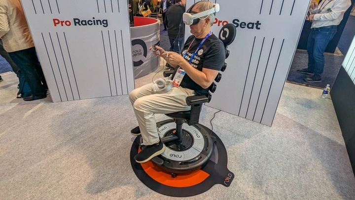
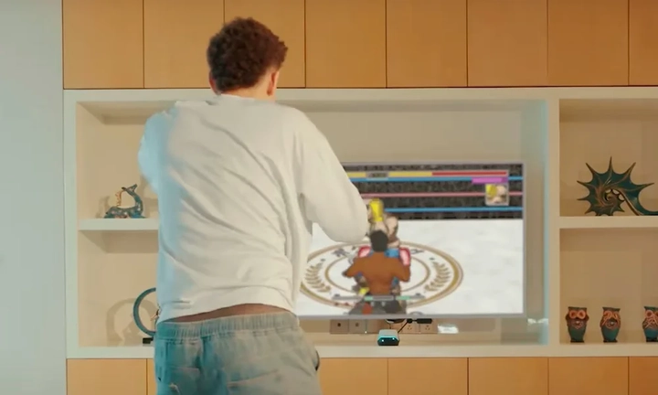
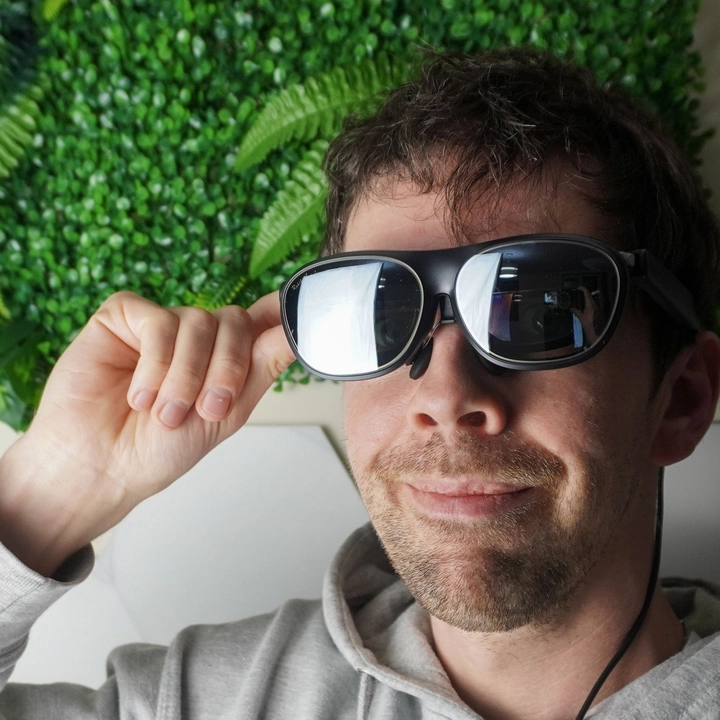
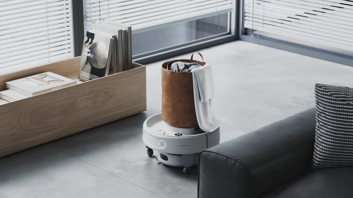
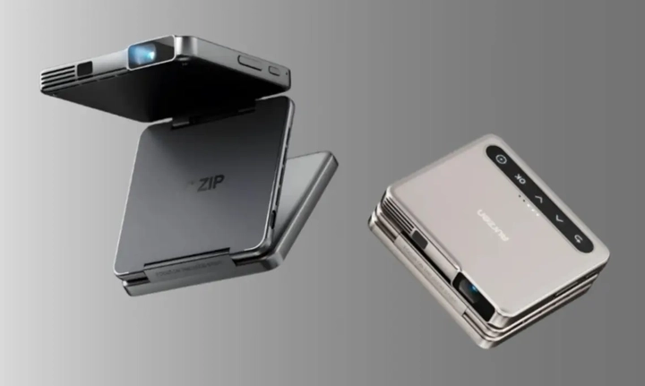
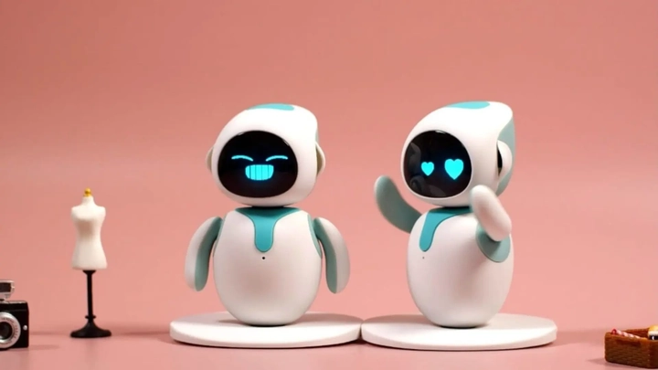
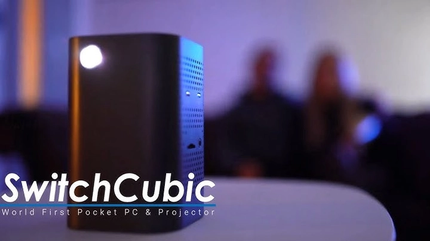
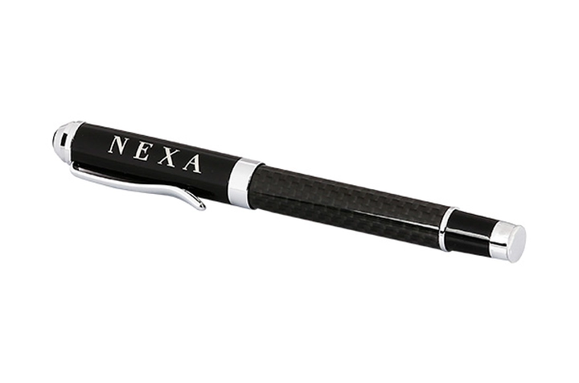
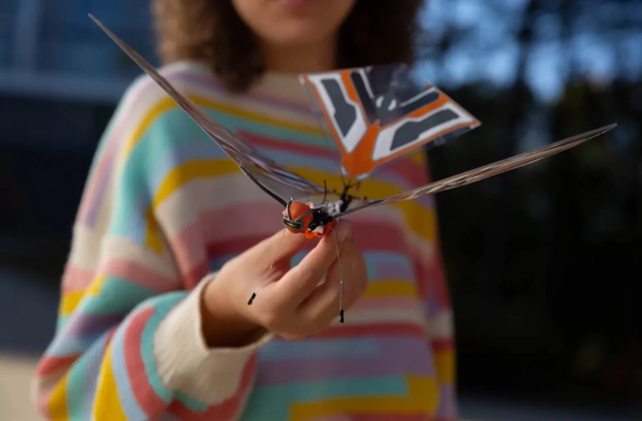

Top 10 thiết bị và phát minh công nghệ mới nhất 2025
Thế giới công nghệ không bao giờ ngừng đổi mới, và năm 2025 chứng kiến sự xuất hiện của những thiết bị cực kỳ sáng tạo, từ máy chơi game thực tế ảo, robot gia đình thông minh, đến kính AR, laptop cuộn OLED và các thiết bị điện năng di động. Dưới đây là 10 sản phẩm công nghệ mới nhất mà bạn chắc chắn sẽ muốn sở hữu.
1. Ghế xoay Roto VR Explorer
Roto VR Explorer là ghế xoay full-turn tích hợp rumble pack được thiết kế dành riêng cho các tai nghe MetaQuest, mang đến trải nghiệm chơi game và mô phỏng bay cực kỳ sống động.
Không chỉ đơn thuần là một chiếc ghế, sản phẩm này sử dụng công nghệ look and turn để theo dõi chính xác chuyển động đầu của bạn, đồng thời kết hợp với haptic feedback giúp toàn bộ cơ thể cảm nhận được từng cú xoay, nghiêng và chuyển động. Nhờ vậy, người dùng sẽ gần như cảm giác đang thực sự bay trên bầu trời hoặc lao mình trong những cuộc đua tốc độ cao mà không gặp tình trạng say sóng VR thường thấy.
Ghế hỗ trợ hơn 400 trò chơi và ứng dụng trên Quest Store, từ các trò đua xe, bay, bắn súng cho đến những trải nghiệm phiêu lưu và khám phá, đem lại cảm giác nhập vai hoàn hảo. Ghế còn được trang bị đệm da cao cấp và tựa lưng thoải mái, đảm bảo trải nghiệm lâu dài mà không mỏi lưng.

Sản phẩm được phát triển bởi Roto VR Ltd, công ty đăng ký tại Anh Quốc, và có chứng nhận “Made for Meta”, đảm bảo tương thích hoàn hảo với các tai nghe MetaQuest. Giá bán tại Anh vào khoảng £599–£799 (tương đương 18–23 triệu VNĐ), còn tại Việt Nam có thể dao động cao hơn do nhập khẩu và phí vận chuyển. Ghế có kích thước khoảng 88,5 cm chiều cao, đường kính xoay 84 cm, trọng lượng 30 kg, và tốc độ xoay tối đa khoảng 21 RPM.
Roto VR Explorer phù hợp với những người chơi VR nghiêm túc, muốn trải nghiệm nhập vai sống động và giảm cảm giác say sóng, đồng thời yêu cầu không gian xung quanh đủ rộng để xoay 360° an toàn.
2. Thiết bị chơi game Body Link
Body Link là hệ thống chơi game điều khiển bằng toàn bộ cơ thể với khả năng full body tracking, cho phép bạn tương tác trực tiếp với thế giới ảo chỉ bằng cử động thực tế. Thiết bị không chỉ dành riêng cho game thủ mà còn là một AR fitness console thông minh, theo dõi nhịp tim, lượng calo tiêu hao và đánh giá bài tập một cách chính xác, mang lại trải nghiệm vừa giải trí vừa rèn luyện sức khỏe.

Bạn có thể thử quần áo ảo, luyện tập boxing với haptic feedback chân thực, hoặc sử dụng tay cầm Switch controllers để chơi các trò FPS, Dance Dash. Body Link biến việc tập luyện trở nên thú vị và sống động, đồng thời loại bỏ cảm giác nhàm chán khi chỉ dùng các thiết bị tập luyện truyền thống.
Sản phẩm được phát triển bởi BodyLink Technologies, công ty đặt trụ sở tại Mỹ, với mức giá khoảng $799–$999 (tương đương 22–28 triệu VNĐ). Thiết bị hỗ trợ Windows và Android, trọng lượng khoảng 12 kg, kích thước 1,8 m x 1 m x 1,5 m, phù hợp với không gian gia đình hoặc phòng chơi game chuyên nghiệp.
3. Kính đeo Rokid AR Light Spatial Computing
Rokid AR Light là kính AR không dây hỗ trợ công nghệ spatial computing, mang đến trải nghiệm màn hình cực lớn 300 inch di động ngay trong tầm tay. Kính có khả năng chạy đồng thời 3 ứng dụng, tương thích với hầu hết app Android, Steam Deck, console, PC, iOS và Android. Màn hình độ phân giải 1920x1200 hiển thị hình ảnh sắc nét, màu sắc sống động, đồng thời có thể điều chỉnh cho người cận thị.

Với kính Rokid AR, bạn có thể chơi game, xem phim hoặc làm việc từ xa mà không cần màn hình cố định, tận hưởng trải nghiệm immersive như trong rạp chiếu phim. Đây là thiết bị lý tưởng cho những ai yêu công nghệ, thích trải nghiệm di động và muốn tận dụng không gian một cách linh hoạt.
Sản phẩm do Rokid Inc. sản xuất tại Trung Quốc, có mức giá khoảng $599–$799 (tương đương 17–23 triệu VNĐ), pin tích hợp cho phép sử dụng liên tục khoảng 4–6 giờ, trọng lượng nhẹ 150g, thuận tiện cho di chuyển cả ngày.
4. Robot đa năng Switchbot K20+ Pro
Switchbot K20+ Pro là robot gia đình đa năng, được thiết kế để thay thế nhiều thiết bị trong nhà, mang lại trải nghiệm thông minh, tiện lợi và vui nhộn. Robot có thể di chuyển đồ vật, hút bụi, giám sát nhà cửa, giao đồ ăn, lọc không khí và tương tác với thú cưng.
Ngoài ra, K20+ Pro còn có khả năng kết hợp với các thiết bị khác như quạt hoặc mini-fridge, biến robot thành trung tâm tiệc tùng, tạo không gian sống tiện nghi, hiện đại và sáng tạo. Các cảm biến thông minh giúp nhận diện vật thể, tránh va chạm và thực hiện nhiệm vụ linh hoạt, giúp người dùng tiết kiệm thời gian và tăng trải nghiệm giải trí tại nhà.

Sản phẩm được phát triển bởi Switchbot Inc., sản xuất tại Trung Quốc, với giá khoảng $499–$699 (tương đương 14–20 triệu VNĐ). Robot có kích thước 50x45x40 cm, trọng lượng 15 kg, pin cho thời gian sử dụng 6–8 giờ, sạc nhanh 2 giờ, thích hợp với mọi gia đình hiện đại.
5. Máy chiếu Orzen Zip Trifold
Orzen Zip là máy chiếu bỏ túi thực thụ, nhỏ gọn nhưng mang lại trải nghiệm điện ảnh chất lượng cao. Máy có độ phân giải 720p, pin tích hợp cho phép chiếu 1,5 giờ liên tục, có thể mở rộng lên 3 giờ với bộ pin Power Play.
Orzen Zip sử dụng kết nối không dây MagP Play, cho phép chiếu trực tiếp từ điện thoại mà không cần Wi-Fi, rất tiện lợi khi đi du lịch, cắm trại hoặc trình chiếu ngoài trời. Thiết kế gọn nhẹ, dễ dàng cầm nắm giúp bạn mang theo mọi nơi, biến bất kỳ không gian nào thành rạp chiếu mini, trải nghiệm phim ảnh và trò chơi sống động mà không cần các thiết bị cồng kềnh.

Sản phẩm được sản xuất bởi Orzen Technologies, tại Hàn Quốc, giá bán khoảng $349–$499 (tương đương 10–14 triệu VNĐ). Kích thước 15x7x5 cm, trọng lượng 450 g, hỗ trợ chiếu lên tới 120 inch ở khoảng cách 3–4 m, với âm thanh tích hợp và khả năng mở rộng qua loa ngoài Bluetooth.
6. Robot Eilik Interactive
Eilik là một robot nhỏ tương tác cảm xúc, được thiết kế để mang lại cảm giác ấm áp và kết nối cho người dùng. Không chỉ là món đồ chơi công nghệ, Eilik giống như một người bạn đồng hành biết phản ứng với cảm xúc của bạn – khi bạn vuốt ve, nó sẽ vui vẻ; khi bạn lờ đi, nó sẽ buồn bã hoặc giận dỗi.
Robot có khả năng hiển thị cảm xúc qua biểu cảm khuôn mặt và cử động cơ thể. Cụ thể, thông số từ hãng cho biết kích thước của Eilik khoảng 108 × 105 × 133 mm, trọng lượng chỉ khoảng 230 g, vỏ làm từ polycarbonate cường độ cao. Ngoài ra, Eilik có loa tích hợp, màn hình nhỏ OLED 1,54″ để hiển thị biểu cảm, và cổng USB‑C để sạc.

Một điểm đáng chú ý: Eilik còn có phiên bản “Eilik x2” tương tác hai robot với nhau, tạo ra nhiều tình huống vui hơn khi có hai thiết bị cùng hoạt động.Đây là món đồ công nghệ lý tưởng dành cho người yêu robot, trẻ em hoặc những ai làm việc một mình cần chút “bạn đồng hành” dễ thương.
7. Ván lướt điện XFoil
XFoil là một ván lướt điện công nghệ cao, kết hợp giữa thiết kế thể thao và động cơ mạnh mẽ, giúp bạn bay lướt trên mặt nước như trong phim viễn tưởng.
Ván được làm từ sợi carbon siêu nhẹ và hợp kim nhôm hàng không, đảm bảo độ bền và trọng lượng tối ưu. Theo thông tin từ hãng, XFoil dài khoảng 169 cm (~66.5”) và có thể chịu trọng lượng người dùng lên đến ~113 kg.
Bộ chuẩn cấu hình của XFoil bao gồm: ván sợi carbon, pin lithium, motor không chổi than 6000W, bộ sạc nhanh và điều khiển không dây. Chế độ “foil” – bay nâng – cho phép bạn lướt nhẹ trên mặt nước mà không cần sóng lớn, mở rộng khả năng sử dụng từ hồ, sông đến biển.
Đây quả thực là một món đồ công nghệ “mơ ước” của những ai yêu thích cảm giác mạnh và muốn tận hưởng biển theo cách hoàn toàn mới.
8. Bộ sạc đa năng SwitchCubic
SwitchCubic là bộ sạc đa năng dạng mô-đun, cho phép bạn kết hợp nhiều khối sạc theo nhu cầu — từ USB-C, Lightning, microUSB đến cổng sạc không dây. Thiết bị này có thiết kế xếp khối giống LEGO, bạn có thể gắn hoặc tháo từng phần để tạo thành bộ sạc du lịch gọn gàng, vừa dùng cho điện thoại, laptop, smartwatch, vừa dùng cho tai nghe.

Ngoài ra, SwitchCubic còn hỗ trợ sạc nhanh PD 100W và chống quá nhiệt thông minh, giúp tối ưu năng lượng khi sử dụng nhiều thiết bị cùng lúc. Một món đồ nhỏ gọn nhưng cực kỳ hữu ích cho những ai thường xuyên di chuyển hoặc làm việc đa thiết bị.
9. Nexa Pen – Bút ghi nhớ kỹ thuật số
Nexa Pen là một chiếc bút thông minh có khả năng ghi lại mọi nét viết tay của bạn và đồng bộ chúng lên ứng dụng trên điện thoại hoặc máy tính bảng. Với cảm biến chính xác cao và bộ nhớ trong, Nexa Pen giúp người dùng dễ dàng chuyển đổi giữa viết tay và kỹ thuật số mà không mất đi cảm giác thật. Ngoài ra, bút còn tích hợp micro ghi âm, cho phép bạn vừa viết vừa lưu lại âm thanh của buổi họp hoặc bài giảng.

Đây là thiết bị hoàn hảo cho sinh viên, nhà báo, nhà thiết kế – những người vẫn yêu cảm giác viết tay nhưng muốn lưu trữ thông minh trên đám mây.
10. Thiết bị bay mini FLY‑X
FLY‑X là một drone mini gập gọn, chỉ bằng lòng bàn tay nhưng lại sở hữu camera và công nghệ tracking hiện đại. Người dùng có thể điều khiển bằng cử chỉ tay hoặc điện thoại, phù hợp cho các vlog du lịch hoặc quay ngoại cảnh. Drone có khả năng bay ổn định, tự quay về điểm xuất phát khi pin yếu và tránh vật cản.

Drone có thể tự tránh vật cản, tự động quay về điểm xuất phát khi pin yếu và bay ổn định ngay cả trong gió nhẹ. Với trọng lượng siêu nhẹ, thời lượng bay 20 phút và khả năng sạc nhanh, FLY-X trở thành món đồ công nghệ đáng sở hữu cho những ai yêu thích quay phim, sáng tạo nội dung và khám phá.
Đây là lựa chọn đáng chú ý cho người sáng tạo nội dung và khám phá không gian từ trên cao.